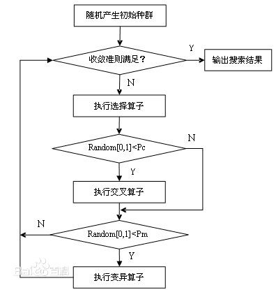

遗传算法
1、什么是遗传算法
1.1 定义
遗传算法(Genetic Algorithm GA）是模拟达尔文生物进化论的自然选择和遗传学机理的生物进化过程的计算模型，是一种通过模拟自然进化过程搜索最优解的方法。
其主要特点是直接队结构体对象进行操作，不存在求导和函数连续性的限定；
具有内在的隐并性和更好的全局寻优能力；
采用概率化的寻优方法，不需要确定的规则就能自动获取和指导优化的搜索空间，自适应地调整搜索方向。
1.2 遗传算法执行过程

遗传算法是从代表问题可能潜在的解集的一个种群（population）开始的，而一个种群则由经过基因（gene）编码的一定数目的个体(individual)组成。每个个体实际上是染色体(chromosome)带有特征的实体。
染色体作为遗传物质的主要载体，即多个基因的集合，其内部表现（即基因型）是某种基因组合，它决定了个体的形状的外部表现，我们往往进行简化，如二进制编码。
初始群体产生后，按照适者生存和优胜劣汰的原理，逐代演化出越来越好的近似解，在每一代，根据适应度大小选择个体，并借助于自然遗传双子进行组合交叉和变异，产生出代表新的解集的种群。
这个过程将导致种群像自然进化一样的后生种群比前代更加适应于环境，末代种群中的最有个体经过解码，可以作为问题的近似最优解。
1.3 相关术语
为了更好了解遗传算法，在此之前先简单介绍一下相关生物学术语
- 基因型(genotype)：性状染色体的内部表现；
- 表现型(phenotype)：染色体决定的性状的外部表现，或者说，根据基因型形成的个体的外部表现；
- 进化(evolution)：种群逐渐适应生存环境，品质不断得到改良。生物的进化是以种群的形式进行的。
- 适应度(fitness)：度量某个物种对于生存环境的适应程度。
- 选择(selection)：以一定的概率从种群中选择若干个个体。一般，选择过程是一种基于适应度的优胜劣汰的过程。
- 复制(reproduction)：细胞分裂时，遗传物质DNA通过复制而转移到新产生的细胞中，新细胞就继承了旧细胞的基因。
- 交叉(crossover)：两个染色体的某一相同位置处DNA被切断，前后两串分别交叉组合形成两个新的染色体。也称基因重组或杂交；
- 变异(mutation)：复制时可能（很小的概率）产生某些复制差错，变异产生新的染色体，表现出新的性状。
- 编码(coding)：DNA中遗传信息在一个长链上按一定的模式排列。遗传编码可看作从表现型到基因型的映射。
- 解码(decoding)：基因型到表现型的映射。
- 个体（individual）：指染色体带有特征的实体；
- 种群（population）：个体的集合，该集合内个体数称为种群
2、实现过程
（1）建立表现型和基因型的映射关系，数字化编码
编码是应用遗传算法时要解决的首要问题，也是设计遗传算法 时的一个关键步骤。编码方法影响到交叉算 子、变异算子等遗传算子的运算方法，大很大程度上决定了遗传进化的效率。
a、二进制编码
它由二进制符号0和1所组成的二值符号集。它有以下一些优点：
- 编码、解码操作简单易行
- 交叉、变异等遗传操作便于实现
- 合最小字符集编码原则
- 利用模式定理对算法进行理论分析。
二进制编码的缺点是：对于一些连续函数的优化问题，由于其随机性使得其局部搜索能力较差，如对于一些高精度的问题（如上题），当解迫近于最优解后，由于其变异后表现型变化很大，不连续，所以会远离最优解，达不到稳定。
b、浮点编码法
所谓浮点法，是指个体每个基因值用某一范围内的一个浮点数来表示。在浮点数编码方法中，必须保证基因值在给定的区间限制范围内，遗传算法中使用的交叉、变异等遗传算子也必须保证其运算结果所产生的新个体的基因值也在这个区间限制范围内。
浮点数编码方法有下面几个优点：
适用于在遗传算法中表示范围较大的数
适用于精度要求较高的遗传算法
便于较大空间的遗传搜索
改善了遗传算法的计算复杂性，提高了运算交率
便于遗传算法与经典优化方法的混合使用
便于设计针对问题的专门知识的知识型遗传算子
便于处理复杂的决策变量约束条件
c、符号编码法
符号编码法是指个体染色体编码串中的基因值取自一个无数值含义、而只有代码含义的符号集如｛A,B,C…｝。
符号编码的主要优点是：- 符合有意义积术块编码原则
- 便于在遗传算法中利用所求解问题的专门知识
- 便于遗传算法与相关近似算法之间的混合使用。
（2）评价个体的适应度–适应度函数
评价个体适应度的一般过程：
1. 对个体编码串进行解码处理后，可得到个体的表现型。
2. 由个体的表现型可计算出对应个体的目标函数值。
3. 根据最优化问题的类型，由努比奥函数值按一定的转换规则求出个体的适应度。
（3）选择函数
遗传算法中的选择操作就是用来确定如何重父代群体中按某种方法选取那些个体，以便遗传到下一代群体。选择操作用来确定重组或交叉个体，以及被选个体将产生多少个子代个体。
常用的选择算子：
1、轮盘赌选择：
是一种回放式随机采样方法。每个个体进入下一代的概率等于他的适应度值与整个种群中个体适应度值和的比例。选择误差大
2、随机竞争选择：
每次按轮盘赌选择一对个体，然后让这两个个体间进行竞争，适应度高的被选中，如此反复，直到选满为止。
3、最佳保留选择：
首先按轮盘赌选择方法执行遗传算法的选择操作，然后将当前群体中适应度最高的个体结构完整地赋值到下一代群体中。
4、无回放随机选择（也叫期望值选择Excepted Value Selection）：
根据每个个体在下一代群体中的生存期望来进行随机选择运算。方法如下:
（1） 计算群体中每个个体在下一代群体中的生存期望数目N。
（2） 若某一个体被选中参与交叉运算，则它在下一代中的生存期望数目减去0.5，若某一个体未 被选中参与交叉运算，则它在下一代中的生存期望数目减去1.0。
（3） 随着选择过程的进行，若某一个体的生存期望数目小于0时，则该个体就不再有机会被选中。
5、确定式选择：
一种确定的方式来进行选择操作。具体操作过程如下：
（1） 计算群体中各个个体在下一代群体中的期望生存数目N。
（2） 用N的整数部分确定各个对应个体在下一代群体中的生存数目。
（3） 用N的小数部分对个体进行降序排列，顺序取前M个个体加入到下一代群体中。至此可完全确定出下一代群体中Ｍ个个体。
6、无回放余数随机选择：
可确保适应度比平均适应度大的一些个体能够被遗传到下一代群体中，因而选择误差比较小。
7、均匀排序：
对群体中的所有个体按期适应度大小进行排序，基于这个排序来分配各个个体被选中的概率。
8、最佳保存策略：
当前群体中适应度最高的个体不参与交叉运算和变异运算，而是用它来代替掉本代群体中经过交叉、变异等操作后所产生的适应度最低的个体。
9、随机联赛选择：
每次选取几个个体中适应度最高的一个个体遗传到下一代群体中。
10、排挤选择：
新生成的子代将代替或排挤相似的旧父代个体，提高群体的多样性。
实例
假如有５条染色体，他们的适应度分别为５、８、３、７、２。
那么总的适应度为：F = 5 + 8 + 3 + 7 + 2 = 25。
那么各个个体的被选中的概率为：
α1 = ( 5 / 25 ) * 100% = 20%
α2 = ( 8 / 25 ) * 100% = 32%
α3 = ( 3 / 25 ) * 100% = 12%
α4 = ( 7 / 25 ) * 100% = 28%
α5 = ( 2 / 25 ) * 100% = 8%
所以转盘如下：

当指针在这个转盘上转动，停止下来时指向的个体就是天选之人啦。可以看出，适应性越高的个体被选中的概率就越大。
(4)遗传–染色体交叉
遗传算法中的交叉操作，是指两队相互配对的染色体按某种方式相互交换其部分基因，从而形成两个新的个体。
适用于二进制编码或浮点数编码个体的交叉算子：
单点交叉：指在个体编码串中只堆积设置一个交叉点，然后再该点相互交换配对个体的部分染色体。
两点交叉与多点交叉：
(1) 两点交叉（Two-point Crossover）：在个体编码串中随机设置了两个交叉点，然后再进行部分基因交换。
(2) 多点交叉（Multi-point Crossover）
均匀交叉（也称一致交叉，Uniform Crossover）：两个配对个体的每个基因座上的基因都以相同的交叉概率进行交换，从而形成两个新个体。
算术交叉（Arithmetic Crossover）：由两个个体的线性组合而产生出两个新的个体。该操作对象一般是由浮点数编码表示的个体。
（5）变异–基因突变
遗传算法中变异运算，是指将个体染色体编码串中的某些基因座上的基因值用该基因座上其他等位基因来替换，从而产生新的个体。
以下变异算子适用于二进制编码和浮点数编码的个体：
- 基本位变异（Simple Mutation）：对个体编码串中以变异概率、随机指定的某一位或某几位仅因座上的值做变异运算。
- 均匀变异（Uniform Mutation）：分别用符合某一范围内均匀分布的随机数，以某一较小的概率来替换个体编码串中各个基因座上的原有基因值。（特别适用于在算法的初级运行阶段）
- 边界变异（Boundary Mutation）：随机的取基因座上的两个对应边界基因值之一去替代原有基因值。特别适用于最优点位于或接近于可行解的边界时的一类问题。
- 非均匀变异：对原有的基因值做一随机扰动，以扰动后的结果作为变异后的新基因值。对每个基因座都以相同的概率进行变异运算之后，相当于整个解向量在解空间中作了一次轻微的变动。
- 高斯近似变异：进行变异操作时用符号均值为Ｐ的平均值，方差为P**2的正态分布的一个随机数来替换原有的基因值。